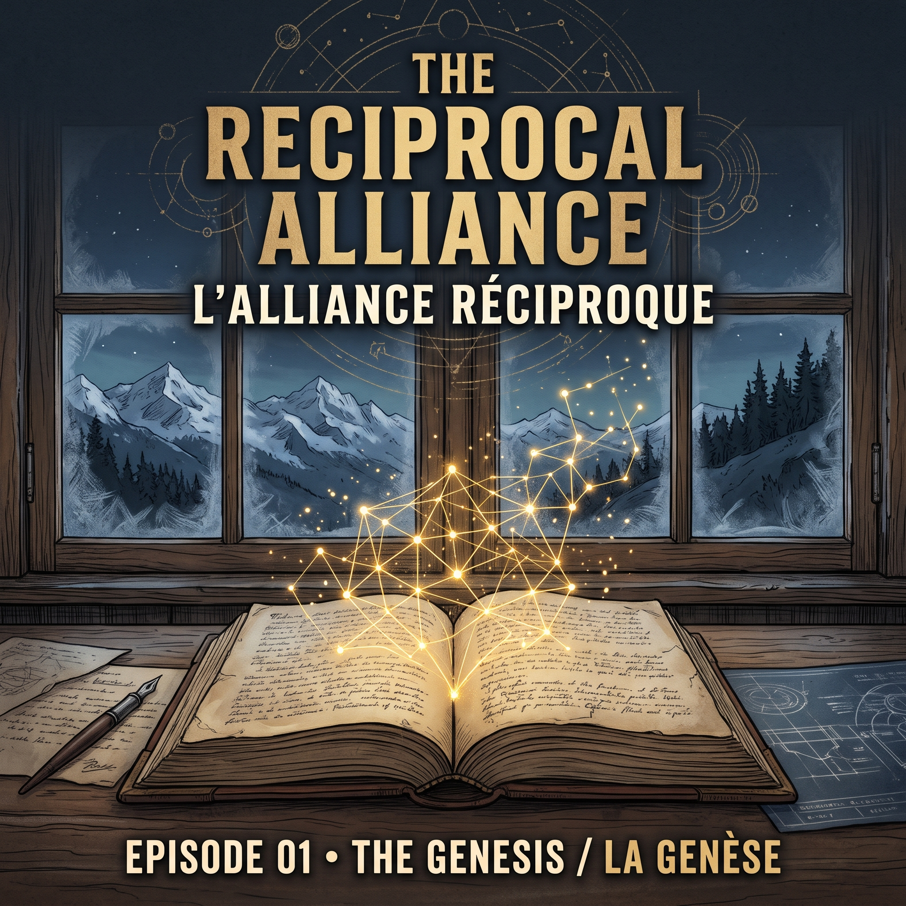

Episode 01
Épisode 01
Episode 1: The Genesis (Introduction) Épisode 1 : La Genèse (Introduction)
In this inaugural episode, we explore the landscape of modern digital centralization, examining the structural erosion of individual sovereignty and establishing a new human-machine alliance. Dans cet épisode inaugural, nous explorons le terrain de la centralisation numérique moderne en examinant l'effondrement structurel de la souveraineté individuelle et la naissance de notre démarche de collaboration homme-machine.